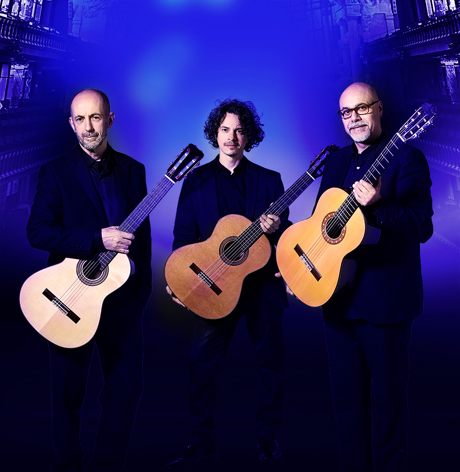

Trío Laurisilva
Música acústica y de raíz
Formación musical que combina guitarra española, cuerda pulsada y voces en un repertorio cercano y de corte tradicional renovado.

Lema: «Cultura viva entre medianías y plazas»
Localidad: Teror, Gran Canaria. Fecha: 19 y 20 de junio de 2027.
Festival Risco y Voz es una cita anual impulsada junto al Ayuntamiento de Teror que reúne música en directo, talleres artesanales, encuentros culturales y zonas de ocio pensadas para todo tipo de público.
Poner en valor el talento artístico local, facilitar el acceso a actividades culturales abiertas y fomentar una participación cívica y respetuosa con el entorno.
Más información municipal en el Ayuntamiento de Teror.
Formación musical que combina guitarra española, cuerda pulsada y voces en un repertorio cercano y de corte tradicional renovado.

Actividad práctica guiada donde los asistentes conocen los materiales tradicionales y elaboran una pieza sencilla paso a paso.

Conjunto de metales y percusión con un repertorio dinámico pensado para animar las sesiones de tarde en el recinto.

| Hora | Actividad | Escenario o lugar | Duración |
|---|---|---|---|
| 10:00 | Apertura de puertas y paseo inaugural | Plaza del Pino | 1 hora |
| 11:00 | Taller de Cestería de Vara | Sala Cultural El Molino | 2 horas |
| 13:30 | Zona de ocio y descanso familiar | Parque de la Alameda | 2 horas |
| 16:00 | Banda Cumbre Brass | Escenario La Fuente | 1 hora y 30 minutos |
| 18:00 | Charla sobre memoria oral y fiestas locales | Casa de la Cultura | 1 hora |
| 20:00 | Trío Laurisilva | Escenario Principal | 2 horas |
Los datos personales introducidos en el formulario de inscripción (nombre y apellidos, correo electrónico, teléfono y opciones de actividad, horario y servicios) se emplearán exclusivamente para tramitar la inscripción en las actividades y enviar comunicaciones relacionadas con la organización del festival. No se compartirán con terceros fuera de los supuestos previstos por la ley.